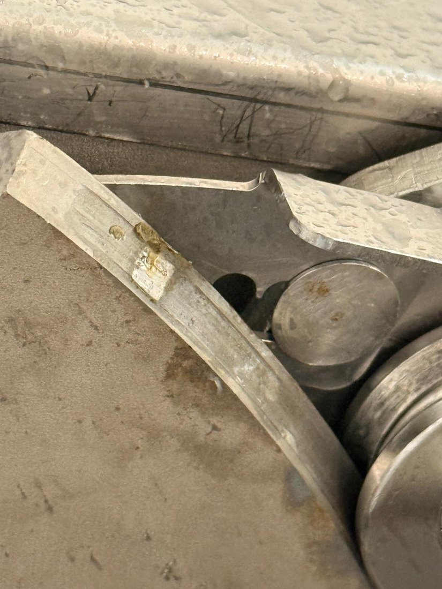
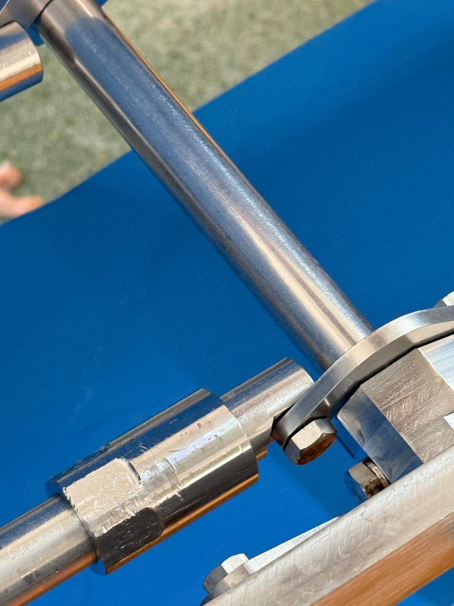
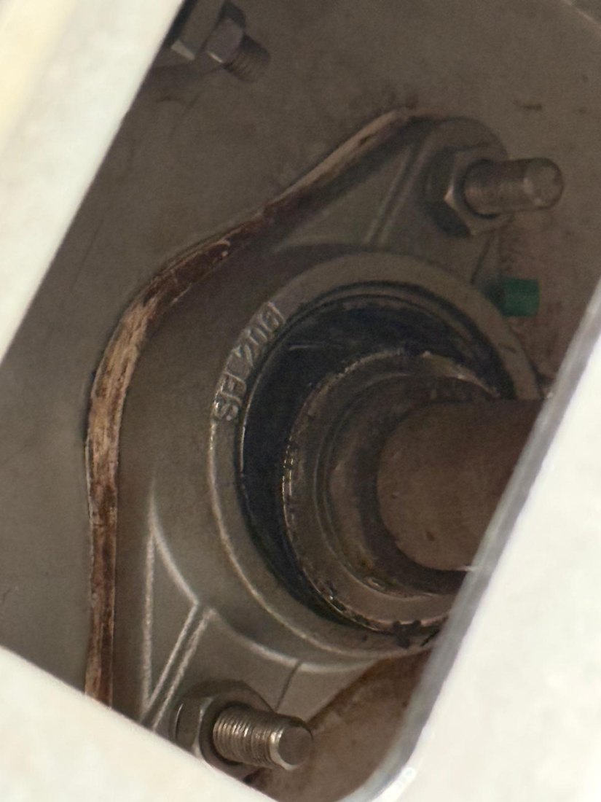
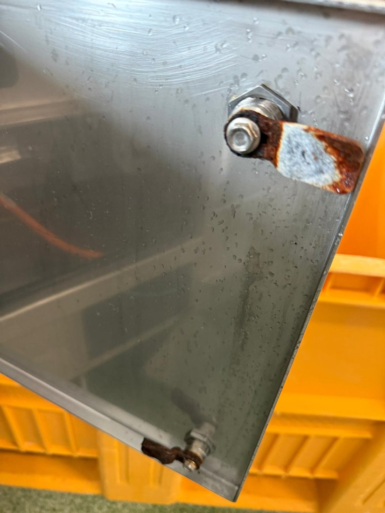
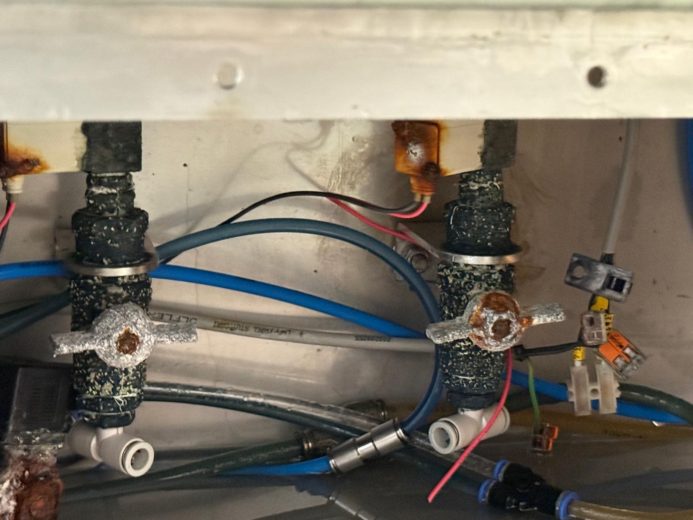
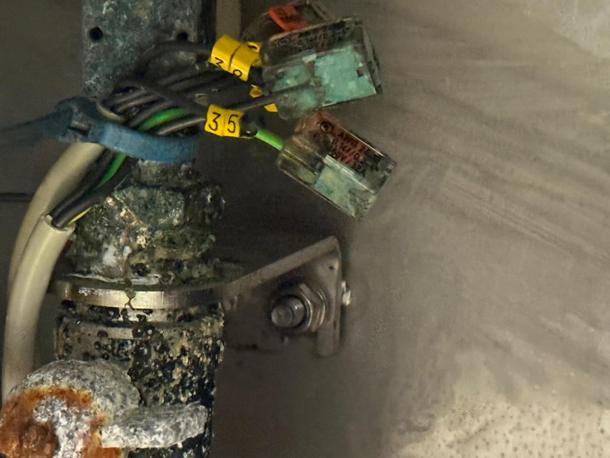
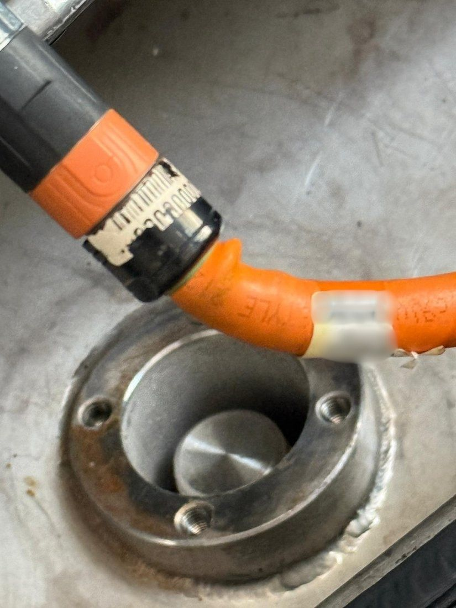

Industrial Machine Retrofit — Reliability & Controls Upgrade
A cross-disciplinary engineering assessment and retrofit plan for an ageing automated processing machine affected by mechanical wear, environmental exposure, control-system instability and maintainability issues.

Reliability problems across multiple machine disciplines
The machine showed recurring start/stop behaviour, EtherCAT and servo connectivity issues, intermittent IPC freezing, mechanical play and difficult knife-tilt operation, conveyor alignment problems and visible oxidation associated with condensation. The engineering task was therefore not a single-component repair: it required a structured assessment across mechanics, electrical systems, controls, safety, software and serviceability.
Wear, missing bushings, bearing damage, alignment and knife-mechanism issues.
Oxidation, sealing concerns and potentially compromised connections exposed to moisture.
EtherCAT / servo connectivity, IPC stability and planned control-system modernization.
Reliability, future downtime prevention, standardization and easier service intervention.
Field assessment, retrofit definition & engineering documentation
My contribution combined hands-on field engineering with the development of a reusable retrofit documentation framework. I created the complete documentation structure so the same engineering process can be applied consistently to future machine retrofits — from initial machine identification and condition assessment through scope definition, BOM planning, execution, validation, final configuration and sign-off. The framework also makes it possible to track retrofit status, responsible persons, participating engineers and stakeholders, open points, approvals and revision history throughout the project lifecycle.
Machine assessment
Inspection of mechanical condition, electrical cabinets, servo/control components, machine safety and environmental damage.
Retrofit scope
Mechanical improvements, electrical renewal, IPC/control modernization, software update and safety-system upgrade.
Reusable retrofit documentation system
Developed a standardized framework for any machine retrofit, including project identification, scope, findings, BOM, responsibilities, execution status, validation, open points, approvals and revision history.
Validation planning
Pre-power checks, functional testing, safety verification, motor/drive and servo checks, HMI controls and automatic-cycle validation.
Selected field evidence







From field condition to validated retrofit
Document the actual machine state and operating complaints.
Separate mechanical, electrical, control and environmental failure modes.
Define work packages and modernization targets.
Build the component/BOM and compatibility framework.
Execute mechanical, electrical, software and safety changes.
Verify startup, safety, I/O, drives, servo, HMI and automatic cycle.
Verification built into the engineering process
The retrofit documentation defines pre-power verification for mechanical and electrical condition, wiring/connectors, safety circuits, software and parameters. Functional validation then covers machine startup, emergency stop, safety circuits, sensors/I/O, motors and drives, the servo system, HMI/controls and automatic operation. Production/load test fields are included for cycle time, output and fault behaviour.
Why this project matters beyond one machine
This project demonstrates the type of systems-level work that transfers directly to high-value equipment in marine, medical, pharma and advanced industrial environments: structured fault finding, cross-discipline integration, modernization of ageing equipment, safety-aware commissioning, validation and technical documentation.